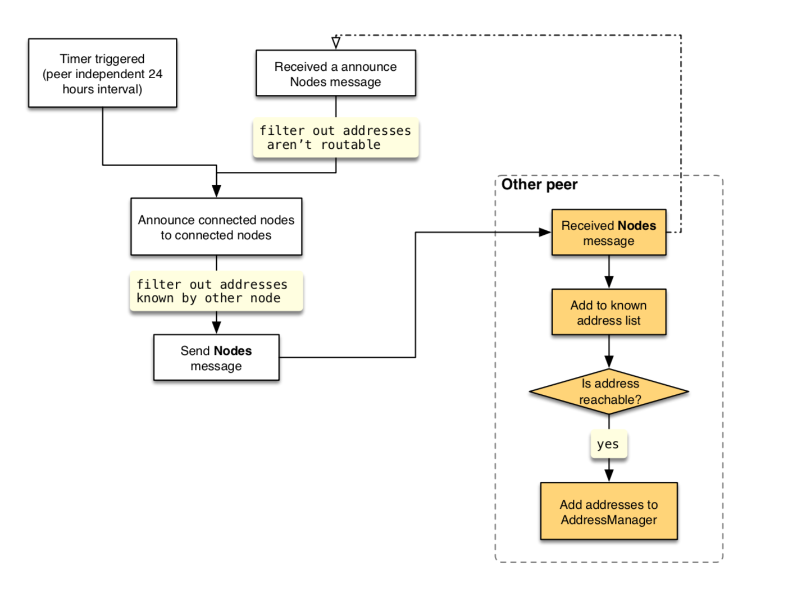

Number: "0012"
Category: Standards Track
Status: Proposal
Author: Linfeng Qian, JinYang Jiang
Organization: Nervos Foundation
Created: 2018-11-28
CKB Node Discovery Protocol
CKB Node Discovery Protocol mainly refers to Satoshi Client Node Discovery. The differences between them are summarized below:
- The node version number is included in the
GetNodesmessage. - The
Nodesmessage is used to periodically broadcast all nodes currently connected. - We use
multiaddras the format of node addresses (It MUST NOT include/p2p/segment otherwise it's considered as misbehavior and a low score SHOULD be given.)
Every time client startup, if PeerStore's address list is empty, it SHOULD try to issue DNS requests to initialize address list. If DNS requests don't work it SHOULD fallback to the hard-coded address list.
Discovery Methods
DNS Addresses
At the first time startup (bootstrap stage), if the discovery service is needed, the local node SHOULD issues DNS requests to learn about the addresses of other peer nodes. The client includes a list of seed hostnames for DNS services.
Hard-Coded "Seed" Addresses
The client contains some hard-coded "seed" IP addresses that represent CKB nodes. Those addresses are used only if all DNS requests fail. Once the local node has enough addresses (presumably learned from the seed nodes), the client SHOULD close seed node connections to avoid overloading those nodes.
"Seed" nodes are nodes that generally have a high uptime and have had many connections to many other nodes.
Protocol Message
GetNodes Message
When all the following conditions are met, the local node will send a GetNodes message:
- It's an outbound connection (for resisting fingerprinting attack).
- The other node's version must bigger than a preset value.
- The number of addresses currently stored is less than
ADDRESSES_THRESHOLD(default 1000).
Nodes Message
When the client receives a GetNodes request, it SHOULD return a Nodes message if this kind of reception is the first time and the connection is an inbound connection, the announce field is set to false. At regular intervals, local node SHOULD broadcast all connected Node information in Nodes message to all connected nodes, the announce field is set to true. When local node received a Nodes message and it's announce field is true, local node SHOULD relay those node addresses that are routable.
The announce field here is to distinguish a Nodes as a response of GetNodes or a broadcast message, so it's convenient to apply different rules for punishing misbehaviors. The main rules:
- A node can only send one
Nodesmessage (announce=false) as a response ofGetNodesmessage. - Among a node's broadcast messages only the first
Nodesmessage (announce=true) can include more thanANNOUNCE_THRESHOLD(default 10) node information, in case other peers send too many node information.
The number of addresses field of each Node in all Nodes messages cannot exceed MAX_NODE_ADDRESSES (default 3).
Resist Typical Attacks
Fingerprinting Attack
GetNodes can only send to an outbound connection.
Data Structures
We use Molecule as serialize/deserialize format, the schema:
table DiscoveryMessage {
payload: DiscoveryPayload;
}
union DiscoveryPayload {
GetNodes,
Nodes,
}
table GetNodes {
version: uint32;
count: uint32;
}
table Nodes {
announce: bool;
items: [Node];
}
table Node {
node_id: Bytes;
addresses: [Bytes];
}
Flow Diagram
Node Bootstrap

Send GetNodes Message

Announce Connected Nodes
